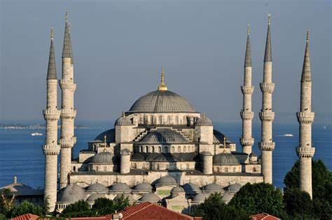
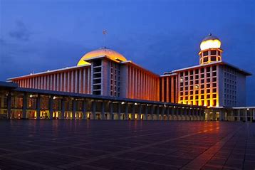
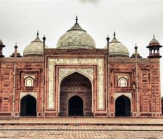
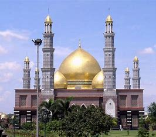
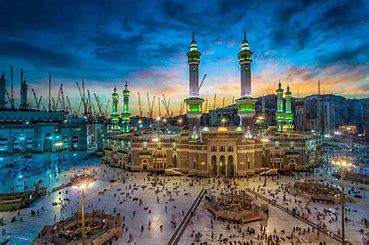
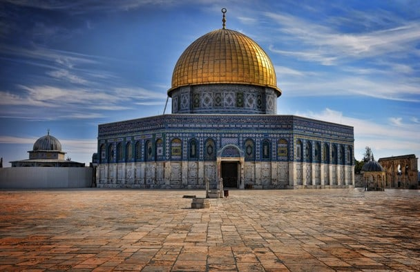

Profile Pembuat
- Nama : Tubagus Muhammad Daffa Athallah
- Email : daffabagus32@gmail.com
- linkedin :https://www.linkedin.com/in/daffa-bagus-2b0b57219
Deskripsi my gallery whislist
ini adalah halaman web gallery yang menampilkan beberapa Masjid di berbagai negara yang saya jumpai dan ingin di jumpai. kota atau daerah ini memiliki keindahan alam, budaya, sejarah, dan kenangan unik yang tidak semua kota memilikinya.
Foto kota favorit
     Informasi kota favorit
| Nama kota | Icon kota | Jumlah penduduk | Keunikan |
|---|---|---|---|
| Istanbul | Masjid Biru | 15.46 miliar | Tempat Bersejarah |
| Jakarta | Tugu Monas | 10,67 juta | Tempat Bersejarah |
| Agra | taj-mahal | 2,348 juta | Tempat Bersejarah |
| Depok | MasjidKubahEmas | 2,085 juta | Pemilik Salah Satu Masjid Termegah |
| Makkah | Ka'bah | 2,150 juta | Tempat bersejarah |
| Yerusalem | Masjid Al-Aqsa | 801 juta | Tempat bersejarah |
Copyrigth ©2023 Tubagus Muhammad Daffa A